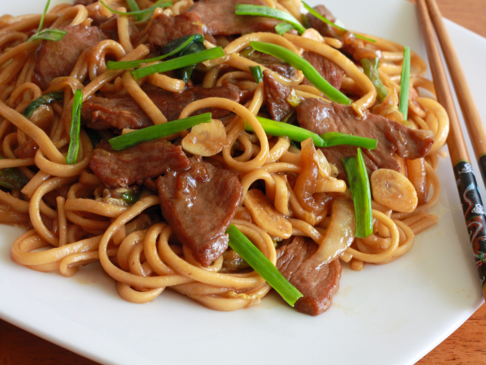

Shanghai Fried Beef Noodles

- Preparation time
20 mins. - Cooking time
15 mins. - Serves
serves 2
A super easy dish to make, with only a few ingredients. It'll be done and on the table within 15-20 minutes. If you're a vegetarian/vegan, simply leave out the meat and replace it with more mushrooms!
Ingredients
- sunflower oil
- 3 tbsp soy sauce
- 2 tbsp shoaxing rice wine
- 2 tbsp oyster sauce
- 2 tsp golden caster sugar
- 2 tsp cornflour
- 300g fresh or straight-to-wok udon noodles
- 300g lean frying steak, cut into strips
- a small chunk ginger, peeled and shredded
- 4 spring onions, chopped (keep some green bits for garnish)
- 1 red chilli, chopped
- 200g pak choy, shredded
How To Make
- Mix the soy, wine, oyster sauce and sugar until the sugar dissolves. Mix the cornflour with 2 tbsp water then stir into the sauce.
- If using straight-to-wok noodles put them in a colander and pour over a kettle of boiling water. This will loosen them up a bit and get rid of any coating. Fresh noodles are fine to add as they are.
- Toss the steak with 1/2 tbsp oil. Heat a wok or pan to high then sear the steak for 2-3 minutes. Scoop the steak out of the pan then add the ginger, spring onions and chilli with another splash of oil and stir-fry for a couple of minutes.
- Add the pak choy and cook until just wilted. Tip in the sauce and noodles with the steak and any juices. Toss until heated through and the sauce thickens slightly. Serve in warm bowls sprinkled with the spring onion greens.